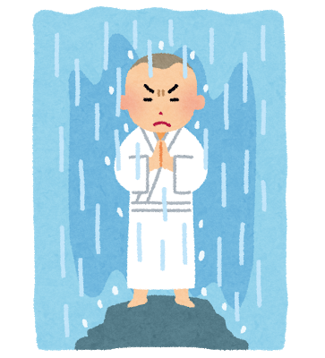
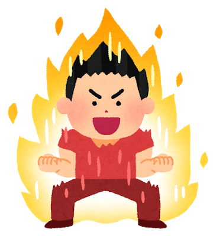

よさこいの沼にはまる
「獲天」として初めて出た祭りは惨敗でした。
私たちの演舞になった途端に会場を後にするお客さん、演舞をしているのに目の前で寝ているお客さんがいるなど私たちの力不足を痛感しました。
そこで工藤に火が付きました。
いつかあなた達お客さんを泣かせるほどの最高の演舞を作ってやると、
工藤はよさこいの沼にはまっていきました。
Kudo Atsushi
この度はお忙しい中、工藤のPortfolioをご覧いただき誠にありがとうございます。
それでは、よろしくお願いいたします。

デザインデータを元にコーディング及び
アニメーションの実装が出来ます。


映像編集ソフトを用いた編集が出来ます。

2020年4月より、友人たちと立ち上げたよさこいチームのwebサイトです。
友人の踊っている映像にAfter Effectsを使用したエフェクトをつけています。
より多くの案件に触れ、実践を通じて基礎的な技術及び知識の強化を図っていきます。
お客様が喜んでくれるような仕事が出来るようになるため、積極的に多くの経験を積んでいきたいです。
お客様の問題解決のために、より適切な提案を出来るWEBディレクターもしくはWEBマーケターとして活躍したいです。
お客様の求めるところを最大限に踏まえつつ、自社の従業員の負担を最小限にするようにしていきたいです。
お客様の求める成果物を作るのみではなく、その後の本当にお客様が求めている成果を生み出せるよう制作面・マーケティング面からサポートしていきたいです。
19歳の頃から「よさこい」を趣味としております。
2015年10月
2015年10月〜
2017年10月
2017年11月
2017年12月〜
2020年3月
2020年4月
大学1年生の秋、知人からよさこいチームを立ち上げないかと誘いがありました。当時、よさこいを聞いたことぐらいしかありませんでしたが、何か打ち込めるものがほしいと思っていたこともあり、誘いを受けました。そして、素人10名が集まったよさこいチームが誕生しました。
チーム名は「獲天（とりてん）」と言います。
「獲天」として初めて出た祭りは惨敗でした。
私たちの演舞になった途端に会場を後にするお客さん、演舞をしているのに目の前で寝ているお客さんがいるなど私たちの力不足を痛感しました。
そこで工藤に火が付きました。
いつかあなた達お客さんを泣かせるほどの最高の演舞を作ってやると、
工藤はよさこいの沼にはまっていきました。
チーム立ち上げから2年間、チームを運営していく中で様々なトラブルがありましたが皆のおかげでなんとか乗り越えてきて、引退時にはチーム規模は40名となっていました。引退直前に参加した九州最大規模のよさこい祭りにおいて、20チームほどが参加する学生の部、200チームほどが参加する本祭の部両方で決勝へ進出することが出来ました。
そこにはもう演舞中に寝るようなお客さんはいませんでした。
「獲天」を引退後、大分に本気でよさこいに打ち込む社会人チームを作ろうと思い立ちました。しかし、私には社会人チームを作るだけのノウハウや踊りの技量が不足しているため、それを学ぼうと東京の社会人チームに所属しました。
この度、「獲天」の頃に一緒に活動をしてくれていた人たちとともに社会人チーム「杏葉（きょうば）」を結成しました。少しづつではありますがいつかは全国のお客さんをあっと驚かせるような最高の演舞を作っていきます。
